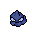
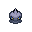

Pokédex / #353

Shuppet #353
Ghost
It uses its horn to feed on envy and malice--or so it's said. It's very active at night.
Generation 3 · Hoenn

Stats
| Attack | 75 | |
|---|---|---|
| Defense | 35 | |
| Sp. Atk | 63 | |
| Sp. Def | 33 |
In the wild
| Wild level | 20–30 |
|---|---|
| HP | 44 |
| Experience | 5 |
| Egg groups | Amorphous |
Evolution
- Evolves into Banette at level 30.
Moves
| Level | Move | Type | Category | Power | Energy | Cooldown | Effect | |
|---|---|---|---|---|---|---|---|---|
| 1 | Tackle | Normal | Physical | 15 | 15 | 1s | Tackle is one of the most common and basic moves a Pokemon learns. It deals damage with no additional effects. | |
| 5 | Knock Off | Dark | Physical | 65 | 100 | 20s | The move does more damage if the target has a held item. | |
| 10 | Night Shade | Ghost | Special | 80 | 80 | 12s | Night Shade deals damage and has no secondary effect. | |
| 15 | Shadow Ball | Ghost | Special | 80 | 80 | 12s | Shadow Ball deals damage and has a 20% chance of lowering the target's Special Defense by one stage. | |
| 20 | Hex | Ghost | Special | 65 | 90 | 12s | Hex inflicts damage, but if the target has a status ailment (i.e. is burned, poisoned, paralyzed, asleep or frozen) it will double in power. | |
| 25 | Curse | Ghost | Status | 50 | 100 | 60s | Curse is a unique move that works differently for Ghost-type Pokemon than other Pokemon. Ghost-type Pokemon use 50% of their current HP to place a curse on the target. The cursed Pokemon loses hp during 5 turns. For all other Pokemon, Curse raises the user's Attack and Defense by one stage each and lowers Speed by one stage. |
Field abilities
Flash
Special abilities
FriskInsomnia
Egg moves
Technical machines
Calm MindDouble TeamDream EaterProtectPsychicRain DanceRestShadow BallShock WaveSubstituteTauntThunderThunder WaveThunderbolt
Drops
| Item | Amount | Chance | |
|---|---|---|---|
| energy soil | 1 | 8.89% | |
| cursed hand | 1 | 3.33% | |
| reaper cloth | 1 | 2.96% | |
| shadow orb | 1 | 2.67% | |
| essence of a bad dream | 1 | 2.67% | |
| petrified scream | 1 | 1.9% | |
 | shuppet doll | 1 | 0.1% |
| Spooky Plate | 1 | 0.002% | |
| TM 50 | 1 | 0.001% | |
| TM 58 | 1 | 0.001% |